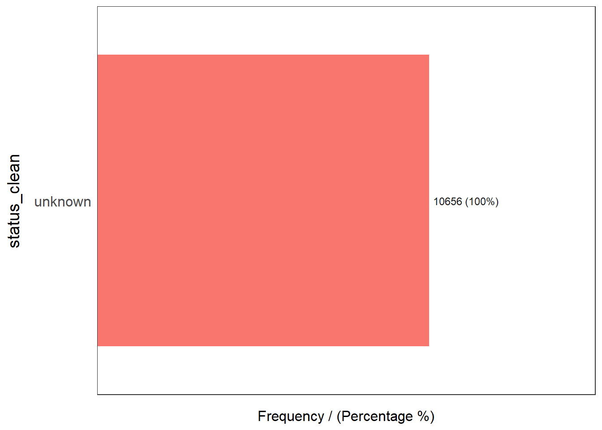

Show the code
pacman::p_load(sf, tidyverse, funModeling)Water is an important resource to mankind. Clean and accessible water is critical to human health. It provides a healthy environment, a sustainable economy, reduces poverty and ensures peace and security. Yet over 40% of the global population does not have access to sufficient clean water. By 2025, 1.8 billion people will be living in countries or regions with absolute water scarcity, according to UN-Water. The lack of water poses a major threat to several sectors, including food security. Agriculture uses about 70% of the world’s accessible freshwater.
Developing countries are most affected by water shortages and poor water quality. Up to 80% of illnesses in the developing world are linked to inadequate water and sanitation. Despite technological advancement, providing clean water to the rural community is still a major development issues in many countries globally, especially countries in the Africa continent.
To address the issue of providing clean and sustainable water supply to the rural community, a global Water Point Data Exchange (WPdx) project has been initiated. The main aim of this initiative is to collect water point related data from rural areas at the water point or small water scheme level and share the data via WPdx Data Repository, a cloud-based data library. What is so special of this project is that data are collected based on WPDx Data Standard.
Geospatial analytics hold tremendous potential to address complex problems facing society. In this study, you are tasked to apply appropriate geospatial data wrangling methods to prepare the data for water point mapping study. For the purpose of this study, Nigeria will be used as the study country.
For the purpose of this assignment, data from WPdx Global Data Repositories will be used. There are two versions of the data. They are: WPdx-Basic and WPdx+. You are required to use WPdx+ data set.
Nigeria Level-2 Administrative Boundary (also known as Local Government Area) polygon features GIS data will be used in this take-home exercise. The data can be downloaded either from The Humanitarian Data Exchange portal or geoBoundaries.
The specific tasks of this take-home exercise are as follows:
For the purpose of this in-class exercise, three R packages will be used. They are: sf, tidyverse and funModeling.
Using the step you had learned, check if these three R packages have been installed in you laptop, if not install the missing R packages. If Yes, launch the R packages into R environment
pacman::p_load(sf, tidyverse, funModeling)Using the step you had learned, import the LGA boundary GIS data of Nigeria downloaded from both sources recommend above.
geoNGA <- st_read("data/geospatial/",
layer = "geoBoundaries-NGA-ADM2") %>%
st_transform(crs = 26392)Reading layer `geoBoundaries-NGA-ADM2' from data source
`D:\tskam\IS415-GAA\In-class_Ex\In-class_Ex02\data\geospatial'
using driver `ESRI Shapefile'
Simple feature collection with 774 features and 5 fields
Geometry type: MULTIPOLYGON
Dimension: XY
Bounding box: xmin: 2.668534 ymin: 4.273007 xmax: 14.67882 ymax: 13.89442
Geodetic CRS: WGS 84NGA <- st_read("data/geospatial/",
layer = "nga_admbnda_adm2") %>%
st_transform(crs = 26392)Reading layer `nga_admbnda_adm2' from data source
`D:\tskam\IS415-GAA\In-class_Ex\In-class_Ex02\data\geospatial'
using driver `ESRI Shapefile'
Simple feature collection with 774 features and 16 fields
Geometry type: MULTIPOLYGON
Dimension: XY
Bounding box: xmin: 2.668534 ymin: 4.273007 xmax: 14.67882 ymax: 13.89442
Geodetic CRS: WGS 84By examining both sf dataframe closely, we notice that NGA provide both LGA and state information. Hence, NGA data.frame will be used for the subsequent processing.
Using the steps you had learned, import the downloaded water point data set into R, at the same time select only water points within Nigeria.
wp_nga <- read_csv("data/aspatial/WPdx.csv") %>%
filter(`#clean_country_name` == "Nigeria")Converting an aspatial data into an sf data.frame involves two steps.
First, we need to convert the wkt field into sfc field by using st_as_sfc() data type.
Using the steps you had learned, convert the newly extracted wp_NGA into an sf data.frame
wp_nga$Geometry = st_as_sfc(wp_nga$`New Georeferenced Column`)
wp_nga# A tibble: 95,008 × 71
row_id `#source` #lat_…¹ #lon_…² #repo…³ #stat…⁴ #wate…⁵ #wate…⁶ #wate…⁷
<dbl> <chr> <dbl> <dbl> <chr> <chr> <chr> <chr> <chr>
1 429068 GRID3 7.98 5.12 08/29/… Unknown <NA> <NA> Tapsta…
2 222071 Federal Minis… 6.96 3.60 08/16/… Yes Boreho… Well Mechan…
3 160612 WaterAid 6.49 7.93 12/04/… Yes Boreho… Well Hand P…
4 160669 WaterAid 6.73 7.65 12/04/… Yes Boreho… Well <NA>
5 160642 WaterAid 6.78 7.66 12/04/… Yes Boreho… Well Hand P…
6 160628 WaterAid 6.96 7.78 12/04/… Yes Boreho… Well Hand P…
7 160632 WaterAid 7.02 7.84 12/04/… Yes Boreho… Well Hand P…
8 642747 Living Water … 7.33 8.98 10/03/… Yes Boreho… Well Mechan…
9 642456 Living Water … 7.17 9.11 10/03/… Yes Boreho… Well Hand P…
10 641347 Living Water … 7.20 9.22 03/28/… Yes Boreho… Well Hand P…
# … with 94,998 more rows, 62 more variables: `#water_tech_category` <chr>,
# `#facility_type` <chr>, `#clean_country_name` <chr>, `#clean_adm1` <chr>,
# `#clean_adm2` <chr>, `#clean_adm3` <chr>, `#clean_adm4` <chr>,
# `#install_year` <dbl>, `#installer` <chr>, `#rehab_year` <lgl>,
# `#rehabilitator` <lgl>, `#management_clean` <chr>, `#status_clean` <chr>,
# `#pay` <chr>, `#fecal_coliform_presence` <chr>,
# `#fecal_coliform_value` <dbl>, `#subjective_quality` <chr>, …Next, we will convert the tibble data.frame into an sf object by using st_sf(). It is also important for us to include the referencing system of the data into the sf object.
Using the steps you had learned, convert the newly extracted wp_NGA into an sf data.frame
wp_sf <- st_sf(wp_nga, crs=4326)
wp_sfSimple feature collection with 95008 features and 70 fields
Geometry type: POINT
Dimension: XY
Bounding box: xmin: 2.707441 ymin: 4.301812 xmax: 14.21828 ymax: 13.86568
Geodetic CRS: WGS 84
# A tibble: 95,008 × 71
row_id `#source` #lat_…¹ #lon_…² #repo…³ #stat…⁴ #wate…⁵ #wate…⁶ #wate…⁷
* <dbl> <chr> <dbl> <dbl> <chr> <chr> <chr> <chr> <chr>
1 429068 GRID3 7.98 5.12 08/29/… Unknown <NA> <NA> Tapsta…
2 222071 Federal Minis… 6.96 3.60 08/16/… Yes Boreho… Well Mechan…
3 160612 WaterAid 6.49 7.93 12/04/… Yes Boreho… Well Hand P…
4 160669 WaterAid 6.73 7.65 12/04/… Yes Boreho… Well <NA>
5 160642 WaterAid 6.78 7.66 12/04/… Yes Boreho… Well Hand P…
6 160628 WaterAid 6.96 7.78 12/04/… Yes Boreho… Well Hand P…
7 160632 WaterAid 7.02 7.84 12/04/… Yes Boreho… Well Hand P…
8 642747 Living Water … 7.33 8.98 10/03/… Yes Boreho… Well Mechan…
9 642456 Living Water … 7.17 9.11 10/03/… Yes Boreho… Well Hand P…
10 641347 Living Water … 7.20 9.22 03/28/… Yes Boreho… Well Hand P…
# … with 94,998 more rows, 62 more variables: `#water_tech_category` <chr>,
# `#facility_type` <chr>, `#clean_country_name` <chr>, `#clean_adm1` <chr>,
# `#clean_adm2` <chr>, `#clean_adm3` <chr>, `#clean_adm4` <chr>,
# `#install_year` <dbl>, `#installer` <chr>, `#rehab_year` <lgl>,
# `#rehabilitator` <lgl>, `#management_clean` <chr>, `#status_clean` <chr>,
# `#pay` <chr>, `#fecal_coliform_presence` <chr>,
# `#fecal_coliform_value` <dbl>, `#subjective_quality` <chr>, …Using the steps you had learned, transform the projection from wgs84 to appropriate projected coordinate system of Nigeria.
wp_sf <- wp_sf %>%
st_transform(crs = 26392)Data cleaning is an important step in any data science task including geospatial data science. It is important for us to do our due deligent to check if any data quality issues occured in the data used.
NGA sf data.frame consists of many redundent fields. The code chunk below uses select() of dplyr to retain column 3, 4, 8 and 9. Do you know why?
NGA <- NGA %>%
select(c(3:4, 8:9))It is always important to check for duplicate name in the data main data fields. Using duplicated() of Base R, we can flag out LGA names that might be duplicated as shown in the code chunk below.
NGA$ADM2_EN[duplicated(NGA$ADM2_EN)==TRUE][1] "Bassa" "Ifelodun" "Irepodun" "Nasarawa" "Obi" "Surulere"The printout above shows that there are 6 LGAs with the same name. A Google search using the coordinates showed that there are LGAs with the same name but are located in different states. For instances, there is a Bassa LGA in Kogi State and a Bassa LGA in Plateau State.
Let us correct these errors by using the code chunk below.
NGA$ADM2_EN[94] <- "Bassa, Kogi"
NGA$ADM2_EN[95] <- "Bassa, Plateau"
NGA$ADM2_EN[304] <- "Ifelodun, Kwara"
NGA$ADM2_EN[305] <- "Ifelodun, Osun"
NGA$ADM2_EN[355] <- "Irepodun, Kwara"
NGA$ADM2_EN[356] <- "Irepodun, Osun"
NGA$ADM2_EN[519] <- "Nasarawa, Kano"
NGA$ADM2_EN[520] <- "Nasarawa, Nasarawa"
NGA$ADM2_EN[546] <- "Obi, Benue"
NGA$ADM2_EN[547] <- "Obi, Nasarawa"
NGA$ADM2_EN[693] <- "Surulere, Lagos"
NGA$ADM2_EN[694] <- "Surulere, Oyo"Now, let us rerun the code chunk below to confirm that the duplicated name issue has been addressed.
NGA$ADM2_EN[duplicated(NGA$ADM2_EN)==TRUE]character(0)Exploratory Data Analysis (EDA) is a popular approach to gain initial understanding of the data. In the code chunk below, freq() of funModeling package is used to reveal the distribution of water point status visually.
freq(data = wp_sf,
input = '#status_clean')
#status_clean frequency percentage cumulative_perc
1 Functional 45883 48.29 48.29
2 Non-Functional 29385 30.93 79.22
3 <NA> 10656 11.22 90.44
4 Functional but needs repair 4579 4.82 95.26
5 Non-Functional due to dry season 2403 2.53 97.79
6 Functional but not in use 1686 1.77 99.56
7 Abandoned/Decommissioned 234 0.25 99.81
8 Abandoned 175 0.18 99.99
9 Non functional due to dry season 7 0.01 100.00Figure above shows that there are nine classes in the #status_clean fields.
Next, code chunk below will be used to perform the following data wrangling tasksP - rename() of dplyr package is used to rename the column from #status_clean to status_clean for easier handling in subsequent steps. - select() of dplyr is used to include status_clean in the output sf data.frame. - mutate() and replace_na() are used to recode all the NA values in status_clean into unknown.
wp_sf_nga <- wp_sf %>%
rename(status_clean = '#status_clean') %>%
select(status_clean) %>%
mutate(status_clean = replace_na(
status_clean, "unknown"))Now we are ready to extract the water point data according to their status.
The code chunk below is used to extract functional water point.
wp_functional <- wp_sf_nga %>%
filter(status_clean %in%
c("Functional",
"Functional but not in use",
"Functional but needs repair"))The code chunk below is used to extract nonfunctional water point.
wp_nonfunctional <- wp_sf_nga %>%
filter(status_clean %in%
c("Abandoned/Decommissioned",
"Abandoned",
"Non-Functional due to dry season",
"Non-Functional",
"Non functional due to dry season"))The code chunk below is used to extract water point with unknown status.
wp_unknown <- wp_sf_nga %>%
filter(status_clean == "unknown")Next, the code chunk below is used to perform a quick EDA on the derived sf data.frames.
freq(data = wp_functional,
input = 'status_clean')
status_clean frequency percentage cumulative_perc
1 Functional 45883 87.99 87.99
2 Functional but needs repair 4579 8.78 96.77
3 Functional but not in use 1686 3.23 100.00freq(data = wp_nonfunctional,
input = 'status_clean')
status_clean frequency percentage cumulative_perc
1 Non-Functional 29385 91.25 91.25
2 Non-Functional due to dry season 2403 7.46 98.71
3 Abandoned/Decommissioned 234 0.73 99.44
4 Abandoned 175 0.54 99.98
5 Non functional due to dry season 7 0.02 100.00freq(data = wp_unknown,
input = 'status_clean')
status_clean frequency percentage cumulative_perc
1 unknown 10656 100 100Next, we want to find out the number of total, functional, nonfunctional and unknown water points in each LGA. This is performed in the following code chunk. First, it identifies the functional water points in each LGA by using st_intersects() of sf package. Next, length() is used to calculate the number of functional water points that fall inside each LGA.
NGA_wp <- NGA %>%
mutate(`total_wp` = lengths(
st_intersects(NGA, wp_sf_nga))) %>%
mutate(`wp_functional` = lengths(
st_intersects(NGA, wp_functional))) %>%
mutate(`wp_nonfunctional` = lengths(
st_intersects(NGA, wp_nonfunctional))) %>%
mutate(`wp_unknown` = lengths(
st_intersects(NGA, wp_unknown)))Notice that four new derived fields have been added into NGA_wp sf data.frame.
In this code chunk below, appropriate functions of ggplot2 package is used to reveal the distribution of total water points by LGA in histogram.
ggplot(data = NGA_wp,
aes(x = total_wp)) +
geom_histogram(bins=20,
color="black",
fill="light blue") +
geom_vline(aes(xintercept=mean(
total_wp, na.rm=T)),
color="red",
linetype="dashed",
size=0.8) +
ggtitle("Distribution of total water points by LGA") +
xlab("No. of water points") +
ylab("No. of\nLGAs") +
theme(axis.title.y=element_text(angle = 0))
In order to retain the sf object structure for subsequent analysis, it is recommended to save the sf data.frame into rds format.
In the code chunk below, write_rds() of readr package is used to export an sf data.frame into rds format.
write_rds(NGA_wp, "data/rds/NGA_wp.rds")